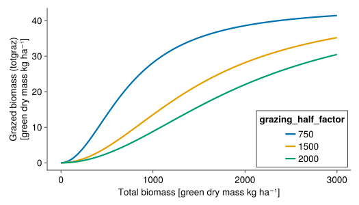

Growth
the net growth of the plants is modelled by...
- the potential growth! that is multiplied by some growth reducer functions and a belowground competition function, these processes are included in the main function
growth! - Leaf senescence
- Agricultural defoliation
GrasslandTraitSim.growth! — Functiongrowth!(; t, p, calc, biomass, WR)Calculates the actual growth of the plant species.
Potential growth
GrasslandTraitSim.potential_growth! — Functionpotential_growth!(; calc, SLA, biomass, PAR, potgrowth_included)Calculates the potential growth of all plant species in a specific patch.
This function is called each time step (day) for each patch. The PAR value is the photosynthetically active radiation of the day.
First, the leaf area indices of all species are calculated (see calculate_LAI). Then, the total leaf area is computed. An inverse exponential function is used to calculate the total primary production:
\[\text{totalgrowth} = PAR \cdot RUE_{max} \cdot (1 - \text{exp}(-\alpha \cdot \text{LAItot}))\]
This primary production is then multiplied with the share of the leaf area index of the individual species

GrasslandTraitSim.calculate_LAI — Functioncalculate_LAI(; SLA, biomass, LAIs)Calculate the leaf area index of all species of one habitat patch.
\[\begin{align} \text{LAI} &= \text{SLA} \cdot \text{biomass} \cdot \text{LAM} \\ \text{LAI}_{\text{tot}} &= \sum \text{LAI} \end{align}\]
SLAspecific leaf area [m² g⁻¹]LAMProportion of laminae in green biomass [unitless], the value 0.62 is derived by [32]biomass[kg ha⁻¹]
There is a unit conversion from the SLA and the biomass to the unitless LAI involved.
The array LAIs is mutated inplace.
Reducer functions
The growth of each plant species in each patch is dependent on...
- ‚òÄ the photosynthetically active radiation
radiation_reduction - üå° the air temperature
temperature_reduction - üíß the soil water content
- the plant-available nutrients
- üìà a seasonal effect, that is modelled by the accumulated degree days
seasonal_reduction
GrasslandTraitSim.radiation_reduction — Functionradiation_reduction(; PAR, radiation_red)Reduction of radiation use efficiency at light intensities higher than 5 $MJ\cdot m^{-2}\cdot d^{-1}$
\[\text{Rred} = \text{min}(1, 1-\gamma_1(\text{PAR}(t) - \gamma_2))\]
The equations and the parameter values are taken from [33].
γ₁is the empirical parameter for a decrease in RUE for high PAR values, here set to 0.0445 [m² d MJ⁻¹]γ₂is the threshold value of PAR from which starts a linear decrease in RUE, here set to 5 [MJ m⁻² d⁻¹]
comment to the equation/figure: PAR values are usually between 0 and 15 $MJ\cdot m^{-2}\cdot d^{-1}$ and therefore negative values of Rred are very unlikely 
GrasslandTraitSim.temperature_reduction — Functiontemperature_reduction(; T, temperature_red)Reduction of the potential growth if the temperature is low or too high with a step function.
\[\text{temperature_reduction}(T) = \begin{cases} 0 & \text{if } T < T_0 \\ \frac{T - T_0}{T_1 - T_0} & \text{if } T_0 < T < T_1 \\ 1 & \text{if } T_1 < T < T_2 \\ \frac{T_3 - T}{T_3 - T_2} & \text{if } T_2 < T < T_3 \\ 0 & \text{if } T > T_3 \\ \end{cases}\]
Equations are taken from [34] and theses are based on [33]. T₁ is in [34] a species specific parameter, but here it is set to 12°C for all species.
T₀is the lower temperature threshold for growth, here set to 3°CT₁is the lower bound for the optimal temperature for growth, here set to 12°CT₂is the upper bound for the optiomal temperature for growth, here set to 20°CT₃is the maximum temperature for growth, here set to 35°C

GrasslandTraitSim.water_reduction! — Functionwater_reduction!(;
calc,
fun_response,
WR,
water_red,
PET,
PWP,
WHC)See for details: Water stress
GrasslandTraitSim.nutrient_reduction! — Functionnutrient_reduction!(;
calc,
fun_response,
nutrient_red,
nutrients)See for details: Nutrient stress
GrasslandTraitSim.seasonal_reduction — Functionseasonal_reduction(; ST, season_red)Reduction of growth due to seasonal effects. The function is based on the yearly cumulative sum of the daily mean temperatures (ST).
\[\text{seasonal}(ST) = \begin{cases} SEA_{min} & \text{if } ST < 200 \\ SEAₘᵢₙ + (SEAₘₐₓ - SEAₘᵢₙ) * \frac{ST - 200}{ST₁ - 400} & \text{if } 200 < ST < ST₁ - 200 \\ SEA_{max} & \text{if } ST₁ - 200 < ST < ST₁ - 100 \\ SEAₘᵢₙ + (SEAₘᵢₙ - SEAₘₐₓ) * \frac{ST - ST₂}{ST₂ - ST₁ - 100} & \text{if } ST₁ - 100 < ST < ST₂ \\ SEA_{min} & \text{if } ST > ST₂ \\ \end{cases}\]
This empirical function was developed by [32]. In contrast to [32] SEAₘᵢₙ, SEAₘₐₓ, ST₁ and ST₂ are not species specific parameters, but are fixed for all species. The values of the parameters are based on [32] and were chosen to resemble the mean of all functional groups that were described there.
A seasonal factor greater than one means that growth is increased by the use of already stored resources. A seasonal factor below one means that growth is reduced as the plant stores resources [32].
STis the yearly cumulative sum of the daily mean temperaturesSEAₘᵢₙis the minimum value of the seasonal effect, here set to 0.67 [-]SEAₘₐₓis the maximum value of the seasonal effect, here set to 1.33 [-]ST₁andST₂are parameters that describe the thresholds of the step function, here set to 625 and 1300 [°C d]

–
Influence of plant height
Taller plants get more light and can therefore growth more than smaller plants. This is modelled by the influence of the potential height in relation to the community weighted mean potential height.
The potential height refers to the height that the plant would reach if it would not be limited by other factors.
GrasslandTraitSim.height_influence! — Functionheight_influence!(; container, biomass)\[\text{heightinfluence} = 1 + \frac{\text{height}\cdot\text{height}_{\text{strength}}}{\text{height}_{\text{cwm}}} -\text{height}_{\text{strength}}\]
height_strengthlies between 0 (no influence) and 1 (strong influence of the plant height) [-]cwm_heightis community weighted mean height [m]

–
Below-ground competition
GrasslandTraitSim.below_ground_competition! — Functionbelow_ground_competition!(; container, biomass)Models the below-ground competiton between plants.
Plant available nutrients and water are reduced if a large biomass of plant species with similar root surface area per above ground biomass (rsa_above) and arbuscular mycorrhizal colonisation (amc) is already present.
We define for $N$ species the trait similarity matrix $TS \in [0,1]^{N \times N}$ with trait similarities between the species $i$ and $j$ ($ts_{i,j}$), where $ts_{i,j} = ts_{j,i}$ and $ts_{i,i} = 1$:
\[TS = \begin{bmatrix} ts_{1,1} & ts_{1,2} & \dots & & ts_{1,N} \\ ts_{2,1} & ts_{2,2} & & \\ \vdots & & \ddots & & \\ ts_{N,1} & & & & ts_{N,N} \\ \end{bmatrix} = \begin{bmatrix} 1 & ts_{1,2} & \dots & & ts_{1,N} \\ ts_{2,1} & 1 & & \\ \vdots & & \ddots & & \\ ts_{N,1} & & & & 1 \\ \end{bmatrix}\]
and the biomass vector $B \in [0\,\text{kg ha⁻¹}, ∞\,\text{kg ha⁻¹}]^N$ with the biomass of each plant species $b$:
\[B = \begin{bmatrix} b_1 \\ b_2 \\ \vdots \\ b_N \\ \end{bmatrix}\]
Then, we multiply the trait similarity matrix $TS$ with the biomass vector $B$:
\[TS \cdot B = \begin{bmatrix} 1 & ts_{1,2} & \dots & & ts_{1,N} \\ ts_{2,1} & 1 & & \\ \vdots & & \ddots & & \\ ts_{N,1} & & & & 1 \\ \end{bmatrix} \cdot \begin{bmatrix} b_1 \\ b_2 \\ \vdots \\ b_N \\ \end{bmatrix} = \begin{bmatrix} 1 \cdot b_1 + ts_{1,2} \cdot b_2 + \dots + ts_{1,N} \cdot b_N \\ ts_{2,1} \cdot b_1 + 1 \cdot b_2 + \dots + ts_{2,N} \cdot b_N \\ \vdots \\ ts_{N,1} \cdot b_1 + ts_{N,2} \cdot b_2 + \dots + 1 \cdot b_N \\ \end{bmatrix}\]
The factors are then calculated as follows:
\[\begin{align} \text{water_density_factor} &= \left(\frac{TS \cdot B}{\text{water_dens}}\right) ^ {- \text{belowground_density_effect}} \\ \text{nut_density_factor} &= \left(\frac{TS \cdot B}{\text{nut_dens}}\right) ^ {- \text{belowground_density_effect}} \\ \end{align}\]
The reduction factors control the density and increases the "functional dispersion" of the root surface area per aboveground biomass and the arbuscular mycorrhizal colonisation.
The TS matrix is computed before the start of the simulation (calculation of traits similarity) and includes the traits arbuscular mycorrhizal colonisation rate (amc) and the root surface area devided by the above ground biomass (rsa_above).
water_density_factoris the factor that adjusts the plant available water [-]nut_density_factoris the factor that adjusts the plant available nutrients [-]TSis the trait similarity matrix, $TS \in [0,1]^{N \times N}$ [-]Bis the biomass vector, $B \in [0, ∞]^{N}$ [kg ha⁻¹]belowground_density_effectis the exponent of the below ground competition factor [-]

Leaf senescence
GrasslandTraitSim.senescence! — Functionsenescence!(; sen, ST, biomass, μ)\[\begin{align} LL &= 10 ^ { \left(log10(SLA) - 2.41\right) / -0.38} \cdot\frac{365.25}{12} \\ μ &= \frac{\text{sen_intercept}}{1000} + \frac{\text{sen_rate}}{1000} \cdot \frac{1}{LL} \\ \text{senescence} &= μ \cdot \text{SEN} \cdot \text{biomass} \end{align}\]
- LL leaf life span [$d$]
- SLA specific leaf area [$\frac{cm^2}{g}$] $\rightarrow$ this includes a unit conversion of the SLA values (in the model the unit of SLA is $\frac{m^2}{g}$)
- μ leaf senescence rate [$\frac{1}{d}$]
- SEN seasonal component of the senescence (between 1 and 3)
- sen_intercept α value of a linear equation that models the influence of the leaf senescence rate μ on the total senescence rate
- sen_rate β value of a linear equation that models the influence of the leaf senescence rate μ on the total senescence rate
The parameters $\text{sen_intercept}$ and $\text{sen_rate}$ were divided by 1000 to avoid very low numbers.
GrasslandTraitSim.seasonal_component_senescence — Functionseasonal_component_senescence(;
ST,
Ψ₁ = 775,
Ψ₂ = 3000,
SENₘᵢₙ = 1,
SENₘₐₓ = 3)Seasonal factor for the senescence rate.
\[\begin{align*} SEN &= \begin{cases} SEN_{min} & \text{if} \;\; ST < Ψ_1 \\ SEN_{min}+(SEN_{max} - SEN_{min}) \frac{ST - Ψ_1}{Ψ_2 - Ψ_1} & \text{if}\;\; Ψ_1 < ST < Ψ_2 \\ SEN_{max} & \text{if}\;\; ST > Ψ_2 \end{cases} \\ \\ \end{align*}\]
- ST yearly accumulated degree days [$°C$]
- $Ψ₁=775$ [$°C\cdot d$]
- $Ψ₂=3000$ [$°C\cdot d$]
- $SEN_{min}=1$
- $SEN_{max}=3$

Agricultural defoliation
Biomass is removed by...
- üêÑ
grazing!andtrampling! - üöú
mowing!
GrasslandTraitSim.grazing! — Functiongrazing!(; container, LD, biomass, relbiomass)\[\begin{align} μₘₐₓ &= κ \cdot \text{LD} \\ h &= \frac{1}{μₘₐₓ} \\ a &= \frac{1}{\text{grazing_half_factor}^2 \cdot h} \\ \text{totgraz} &= \frac{a \cdot (\sum \text{relbiomass}⋅\text{biomass})^2} {1 + a\cdot h\cdot (\sum \text{relbiomass}⋅\text{biomass})^2} \\ \text{share} &= \frac{ \rho \cdot \text{biomass}} {\sum \left[ \rho \cdot \text{biomass} \right]} \\ \text{graz} &= \text{share} \cdot \text{totgraz} \end{align}\]
It is thought that animals consume more in areas with greater biomass, resulting in greater trampling damage (see parameter relbiomass).
LDdaily livestock density [livestock units ha⁻¹]κdaily consumption of one livestock unit [kg d⁻¹], follows [35]ρappetence of the plant species for livestock, dependent on nitrogen per leaf mass (LNCM) [-], initiliazed by the functiongrazing_parameter!relbiomass: relative biomass of the patch in relation to the mean biomass of the whole grassland, is calculated bycalculate_relbiomass![-]grazing_half_factoris the half-saturation constant [kg ha⁻¹]- equation partly based on [34]
Influence of grazing (livestock density = 2), all plant species have an equal amount of biomass (total biomass / 3) and a leaf nitrogen content of 15, 30 and 40 mg/g:
leafnitrogen_graz_exp= 1.5

leafnitrogen_graz_exp= 5

Influence of grazing_half_factor: 
GrasslandTraitSim.mowing! — Functionmowing!(;
calc,
mowing_height,
days_since_last_mowing,
height,
biomass,
mowing_mid_days)\[\begin{align} \lambda &= \frac{\text{mown_height}}{\text{height}}\\ \text{mow_factor} &= \frac{1}{1+exp(-0.1*(\text{days_since_last_mowing} - \text{mowing_mid_days})}\\ \text{mow} &= \lambda \cdot \text{biomass} \end{align}\]
The mow_factor has been included to account for the fact that less biomass is mown when the last mowing event was not long ago. Influence of mowing for plant species with different heights ($height$): 
Visualisation of the mow_factor: 
GrasslandTraitSim.trampling! — Functiontrampling!(; calc, LD, biomass, relbiomass, height, trampling_factor)\[\begin{align} \text{trampled_proportion} &= \text{height} \cdot \text{LD} \cdot \text{trampling_factor} \\ \text{trampled_biomass} &= \min(\text{relbiomass} ⋅ \text{biomass} ⋅ \text{trampled_proportion}, \text{biomass}) \\ \end{align}\]
It is assumed that tall plants (trait: height) are stronger affected by trampling. A linear function is used to model the influence of trampling.
It is thought that animals consume more in areas with greater biomass, resulting in greater trampling damage (see parameter relbiomass).
Maximal the whole biomass of a plant species is removed by trampling.
biomass[$\frac{kg}{ha}$]relbiomass: relative biomass of the patch in relation to the mean biomass of the whole grassland, is calculated bycalculate_relbiomass![-]LDdaily livestock density [$\frac{\text{livestock units}}{ha}$]trampling_factor[ha m⁻¹]- height canopy height [$m$]

GrasslandTraitSim.calculate_relbiomass! — Functioncalculate_relbiomass!(; calc, p)Relative biomass of the patches in relation to the mean biomass of the overall grassland.
\[\text{relbiomass} = \frac{\text{patch_biomass}}{\text{mpatch_biomass}}\]
relbiomassrelative biomass of each patch [-]patch_biomasssum of the biomass of all species in one patch [kg ha⁻¹]mpatch_biomassmean of the sum of the biomass of all species in all patches [kg ha⁻¹]
Clonal growth
GrasslandTraitSim.clonalgrowth! — Functionclonalgrowth!(; container)Yearly clonal growth.
\[\begin{align} \text{growth_factor} &= \frac{0.05}{\text{nneighbours}} \\ \text{crowded_factor} &= \min(\frac{\text{msurrounded_biomass}}{\text{biomass_target}}, 2.0) \\ \text{clonalgrowth} &= \text{growth_factor} \cdot \text{crowded_factor} \cdot \text{biomass} \\ \end{align}\]
The biomass is transferred from the home patch to the neighbour (target) patches. This is done for all patches once per year.
clonalgrowth: biomass that is transferred from the home to the target patch [kg ha⁻¹]nneighbours: number of neighbour patches of the home patch. For a grid this value lies between 2 (edge) and 4 (middle).msurrounded_biomass: mean biomass of the home and the (upto 4) neighbour patches [kg ha⁻¹]biomass_target: biomass of the target patch [kg ha⁻¹]growth_factor: proportion of biomass that is transferred from the home patch to one neighbour patch. This factor is modified by thecrowded_factor[-]crowded_factor: factor to adapth clonal growth based on the biomass distribution of the patches in the direct surroundings. The value lies between 0 (no clonal growth due to high surrounded biomass) and 2 (high clonal growth due to high own biomass).